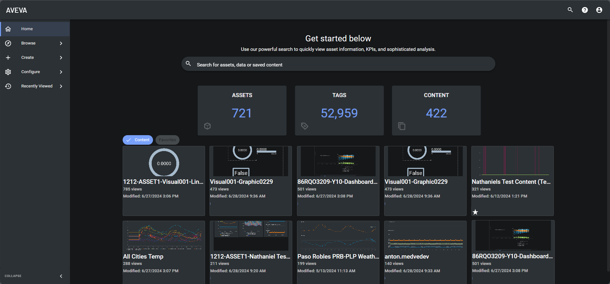

AVEVA CONNECT Visualization is a service within the AVEVA Connect platform that allows users to visually interact with and analyze data from various industrial sources in real time. It provides powerful tools for creating customizable dashboards, charts, and reports, helping users visualize performance metrics, KPIs, and trends across their operations.
Frontend Development
At AVEVA, I worked on Insight and CONNECT frontends, implementing features, refactoring code, and collaborating with cross-functional teams to enhance real-time industrial data visualization.
At ELRC, I led a team to deliver a machine learning SaaS platform that enabled Texas school leaders to improve STAAR performance predictions, overseeing both front-end and back-end development.
Software Developer
Sep 2023 - Nov 2024

Description
(-)Key Contributions
(+)- Visualization Homepage: Created the initial draft with mock data and implemented tab-organized navigation cards with skeleton loaders, empty states, thumbnail pictures, view counts, and favorites functionality. Added tabs for most recently viewed and favorited navigation cards.
- Content List Page: Separated the content list page into its own component, fixed filtering bugs, added a horizontally scrolling carousel for recently created content, and implemented favorite toggle buttons for content cards.
- Miscellaneous: Removed unused services, disabled content creation actions on mobile, added functionality to create new content from selected tags, and allowed dashboard creation from selected content. Hid specific features behind feature flags.
- Refactored the shared entity search component, fixed bugs, and improved accuracy and functionality.
- Set up mobile device identification services, added eslint rules, and improved Cypress tests.
- Implemented external sharing, created shared content cards, improved site loading performance, and ensured list column sort persistence.
- Hid items and features based on user permissions and device type, fixed critical bugs, and improved Cypress testing.
Tools Used
(-)Angular, Typescript, Cypress, Jest, NodeJS, Azure, HTML, CSS
Software Developer
Aug 2022 - Nov 2024
Summary
(-)A cloud-based industrial analytics platform
Description
(-)AVEVA Insight delivers actionable information and Artificial Intelligence capabilities to help industrial teams improve asset reliability and operational performance.
Key Contributions
(+)- New Alert Page: Implemented a new alert creation page, ensuring no RxJS data leaks, Figma correctness, and uniformity across the site. Fixed an issue where inactive alerts were being incorrectly shown on the active alert page.
- Lists Pages: Reorganized sections, added content cards, and varied asset link access based on permissions.
- Dashboard View: Enhanced mobile dashboard functionality, varying content display, actions, and controls based on device and user roles.
- Content View Page: Integrated PowerBI and fixed bugs, removing timelines for mobile devices.
- Asset View Page: Fixed bugs, adjusted asset page permissions, and removed links based on user roles.
- Asset Types View Page: Created an Asset Tag Mappings tab with export functionality, dynamically naming files from MongoDB data.
- Miscellaneous Contributions: Corrected the logo, refactored the shared entity search, improved performance, added new save functionality with auto-navigation, and hid features behind feature flags.
- Refactored the shared entity search, improved styling, accuracy, and functionality, and fixed bugs.
- Set up mobile device identification services, added eslint rules, and improved Cypress tests.
- Created shared content cards and improved site performance through caching and optimizations.
- Implemented list column sort persistence and hid items based on permissions and device type.
Tools Used
(-)Angular, Typescript, Cypress, Jest, NodeJS, Azure, HTML, CSS
ELRC's Machine Learning SaaS
- My role was to enable Texas school leaders to gauge their school's STAAR performance through the use of a novel machine learning model, with over 90% accuracy, in order to optimize their school's test preparation.
- I achieved this by overseeing 100% of the development of both the front-end and back-end of a software as a service (SaaS) website built with Python-Django, Flask, TensorFlow, and AWS.
- Demonstrated strong accountability by leading a team of five software engineers as Scrum Master, successfully delivering a major software project on time and 8% under budget.